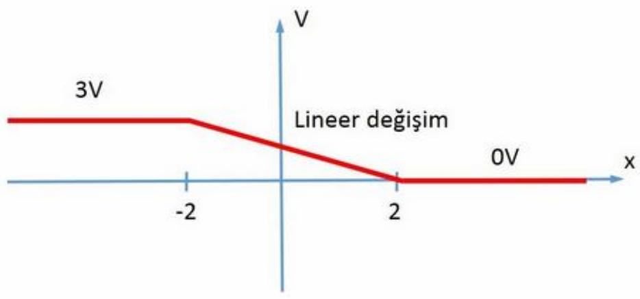

· EEM224
EEM224 Elektromanyetik I: 2014 Bahar Dönemi Ödevleri (Ödev 1–4)
EEM224 – Elektromanyetik I · 12.03.2014 · 16.10.2026
Bu yazı, Başkent Üniversitesi EEM224 Elektromanyetik I dersinde 2014 bahar döneminde verilen ilk dört ödevi bir araya getiriyor. Ödevleri dersin öğretim üyesi Dr. S. Gökhun Tanyer hazırlamış; tarihleri 17 Şubat – 12 Mart 2014. Belgelerin üst bilgisinde dersin İngilizce adı EEM 224 Electromagnetic Wave Theory I olarak geçiyor. Dört ödevin orijinal PDF'leri yazının sonunda ZIP olarak indirilebilir.
Ödev kuralları
Her ödev föyünün başında aynı kurallar yer alıyor:
- Teslim tarih ve saati: Bir hafta boyunca verilen tüm ödevler, ödevin verildiği haftayı izleyen ilk pazartesi günü, ilk ders girişinde teslim edilecektir. Geç teslimatlarda ödev değerlendirmeleri her geciken gün başına %20 kayba uğrayacaktır.
- Ödevlerin ilk sayfasının en üstünde isim, soyisim, numara ve ödev numarası tam olmayanların notları %10 kayba uğrayacaktır.
- Tüm açıklamaları kendi el yazınızla ve gerektiğinde şekil çizerek hazırlayınız.
- Ödevlerinizde kapak sayfası ile plastik poşet dosya kullanmayınız.
Ödev 1: Dalga olayları (17 Şubat 2014)
Bu ödeve ait özel durum: teslim tarihi, ekle-sil haftasının sonrasındaki ilk pazartesidir (3 Mart).
- YouTube'dan Tolgahan Çoğulu'nun ayarlanabilir perdeli gitarını dinleyiniz. Dinlediklerinizi kısa cümlenizle yorumlayınız.
- Rayleigh saçınımı (scattering) nedir?
- Enterferans (interference) nedir?
- Polarizasyon (polarization) nedir?
İnternet üzerinde bulduğunuz bilgilerden faydalanarak, kendi cümlelerinizle ne anladığınızı anlaşılır şekilde boş bir kâğıda yazınız. Gerektiğinde destekleyici grafik çizebilirsiniz. Tüm açıklamaları kendi el yazınızla ve gerektiğinde şekil çizerek hazırlayınız.
Ödev 2: Vektörler (2 Mart 2014)
Ders kitabı: D. K. Cheng, Field and Wave Electrodynamics.
- Kitaptaki gözden geçirme soruları (Review Questions): R.2–1, R.2–3, R.2–4, R.2–10.
- Kitaptaki problemler: P.2–1, P.2–3.
Sınıfta ilan edildiyse diğer sorular da ödeve eklenir.
Not: Föyde kitap adı "Field and Wave Electrodynamics" olarak yazılmış; R.2 ve P.2 numaraları Cheng'in "Field and Wave Electromagnetics" kitabının 2. bölümüne (vektör analizi) karşılık geliyor gibi görünüyor.
Ödev 3: Matlab ile çizim (12 Mart 2014)
Bu ödevde Matlab vb. yazılım ortamını göreceksiniz. Bu ödevdeki sorular ile aşağıdaki yazılım komutlarını inceleyiniz:
clear
plot, axis, subplot, contour, mesh, surf, surfl, movie
title, xlabel, ylabel
figure, clf
hold off, hold on
set(gca, 'ytick', [0 1 2])
set(gca, 'xtick', [0 1 2])
grid on, grid off
legendSoru 1. Yazılım kullanarak
- a. çemberin uzunluğu ve alanını,
- b. kürenin alanı ile hacmini
hesaplatınız.
Soru 2. Aşağıdaki şekilleri çizdiriniz:
| Şekil | İstenen |
|---|---|
| Figure 1 | x = 0'dan 360'a kadar giden vektörü çizdiriniz. |
| Figure 2 | y = 0'dan 360·2'ye giden vektörü aynı grafiğe ilave ediniz. |
| Figure 3 | z = 0'dan 2π'ye giden vektörün sinüsünü alarak yeni grafiğe çiziniz. |
| Figure 4 | Figure 3'e kosinüs, −sinüs ve −kosinüsü ilave ediniz. Şekiller karışmasın diye düz, kesikli, kesikli noktalı ve noktalı olarak çizdiriniz. Ayrıca renklendirme ve çizgi kalınlığını ayarlama da yapabilirsiniz. |
| Figure 6 | AXIS komutu kullanarak grafiğinizin çerçevesini düzeltiniz/oluşturunuz. TITLE: şekil adı olacak; XLABEL: birimi varsa belirtilecek; YLABEL: çizdirilen konunun adını belirtiniz. |
| Figure 7 | Bu grafiğinize LEGEND ile ilave yapınız. |
| Figure 8 | 50×50 boyutunda bir matris oluşturunuz. Bu matrisi subplot yardımı ile contour, mesh, surf ve surfl komutlarını kullanarak dört grafiği tek sayfada çizdiriniz. |
Ödevlerinizde yazılımın kendisi ile şekillerinizi teslim ediniz.
Not: Föydeki şekil numaraları 4'ten 6'ya atlıyor; "Figure 5" maddesi yok.
Ödev 4: Matematiksel operatörler (12 Mart 2014)
Bu ödevde matematiksel operatörleri gözden geçireceğiz.

1. Artış vektörünün bulunması
Şekildeki elektrik potansiyeli x ≤ −2 için 3 V, x ≥ 2 için 0 V; −2 ile 2 arasında doğrusal olarak değişiyor.
- 1.A. Şekilde gösterilen elektrik potansiyel alanını matematiksel olarak ifade ediniz: V(x, y, z) = ? (Linear = doğrusal)
- 1.B. Elektrik potansiyel alanını tüm uzayda (her yerde, gerektiğinde ayrı ayrı bölgelerde tanımlayarak) bulunuz.
2. Iraksama miktarı ile buklenin bulunması
İkinci şekil aynı eğriyi, bu kez dikey ekseni E_x olarak gösteriyor.
- 2.A. Şekilde sadece x bileşeni olduğu belirtilen elektrik alanını matematiksel olarak ifade ediniz. Iraksama miktarını hesaplayınız.
- 2.B. Şekilde verilenin elektrik alanının y bileşeni olması hâlinde elektrik alanını matematiksel olarak ifade ediniz. Iraksama miktarını tekrar hesaplayınız.
- 2.C. Şekilde verilenin elektrik alanının y bileşeni olması hâlinde, bu sefer elektrik alanının buklesini bulunuz.
3. (Dahil edilecek)
Föyde üçüncü soru için yalnızca "Dahil edilecek." yazıyor; sınıfta ilan edildiyse diğer sorular da ödeve eklenir.